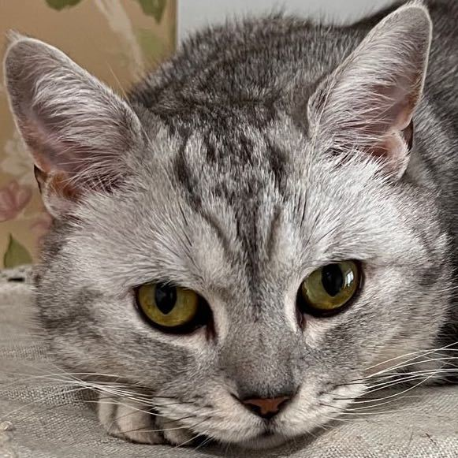

陆思翰
组内职务
策划+主要程序+游戏背景设定
性别：男
学号：1120212952
北京理工大学2021级软件工程专业学生
关于我的爱好：
音乐：
自幼学习钢琴，也尝试过音乐制作（浅尝辄止），对游戏音乐也是有独到的见解
编程：
对于编程比较感兴趣，但此前并没有尝试过html和前端设计内容，本项目属于一次全新的尝试。
游戏：
个人比较喜欢rpg,尝试过用rpg maker制作一款短流程的冒险类rpg游戏。
对于主机和PC上的大型游戏十分热衷，3A大作也体验过不少，个人推荐剧情《巫师3》，视觉效果
《2077》，整体游戏性《荒野大镖客2》。
对于移动端的优秀作品也尝试过不少，也常常思考一些大厂如何充分发挥移动设备性能以及兼容
性。
运动：
运动方面游泳、跑步、篮球、羽毛球都有所涉猎，爱好广泛但并不精通。
联系方式：邮箱：Lusihan262@163.com
